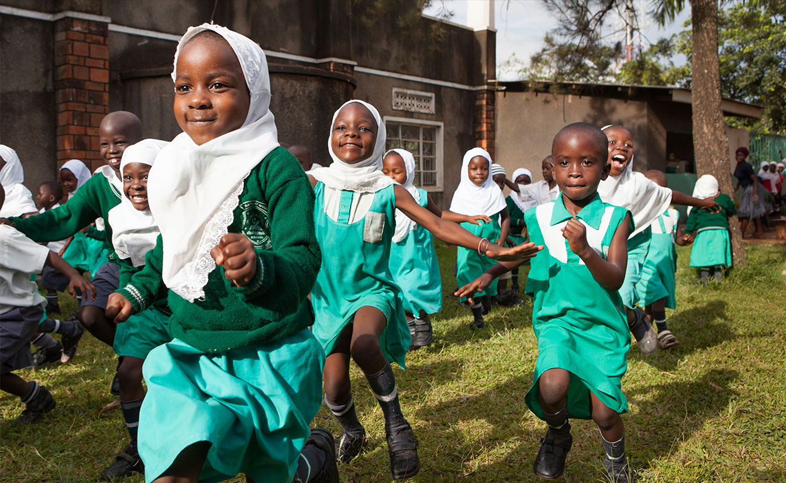
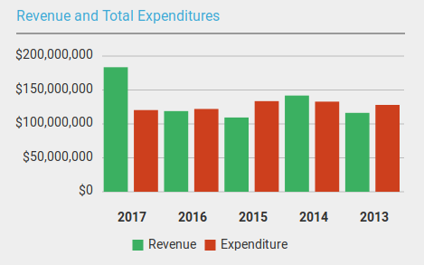

Aga Khan Foundation Canada

The Aka Khan Foundation is a private, not-for-profit international development agency, which was founded in 1967 by Prince Shah Al Hussaini, Aga Khan IV.
Aga Khan Foundation Canada

AKFC's work covers two core lines of activity: programming related to international development, and the acquisition and development of properties used for charitable purposes. Both of these areas are supported by separate funding streams. It also offers an International Fellowship Program for Young Canadians and other programs enabling Canadians to serve in the developming world, and a robust public engagement and professional learning program to raise awareness and encourage discussion about Canada's role in an interdependent world.